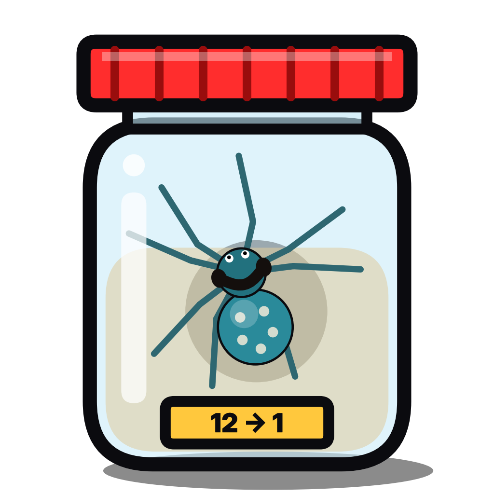

Лига Банки
Условия использования
Действуют с 13 октября 2026 года.
- Liga Banki Publisher — служебный инструмент владельца канала «Лига Банки» и не предоставляется другим пользователям.
- Используя приложение, владелец канала также соглашается с Условиями использования YouTube.
- Ролики канала — компьютерная симуляция; живые животные не участвуют, персонажи вымышлены, совпадения случайны.
- Приложение предоставляется «как есть»; владелец может изменить или прекратить его работу в любой момент.
Связь: youtube.com/@ligabanki.
Terms of Service. Liga Banki Publisher is an internal tool of the owner of the channel “Лига Банки” and is not offered to other users. Use of the app is also subject to the YouTube Terms of Service. The app is provided as is.